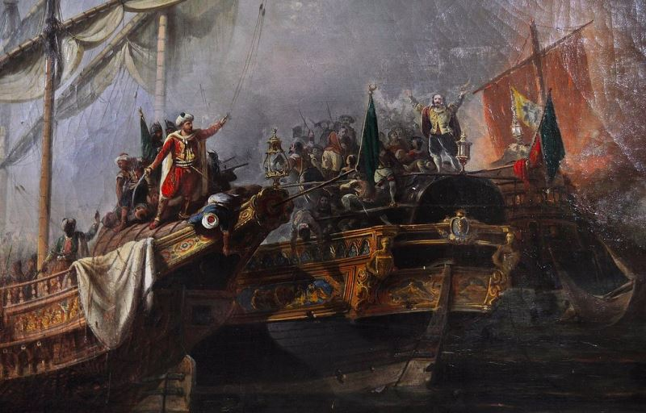

- Anasayfa
- Türk Korsanlarımız
- Yabancı Korsanlar
- Korsan Deniz Savaşları
Savaş Derecesi:
Preveze Deniz Savaşı

Kaptan-ı deryâ Barbaros Hayreddin Paşanın, Andrea Doria komutasındaki Haçlı donanması ile yaptığı deniz savaşı. 27 Eylül 1538’de Adriyatik Denizinin Arta Körfezi kıyısında, Preveze Kalesi önündeki açık sularda yapılmış ve Osmanlı donanmasının zaferiyle sonuçlanmıştır. Başlangıçta Osmanlı Devleti'nin emrinde olmayan Barbaros Hayreddin Paşa ve arkadaşlarının, Akdeniz hâkimiyetinde rolü çok büyüktür. Bu kahraman Türk denizcileri, Cezayir ve Tunus’ta yerleşmeye çalışan Avrupalıları oralardan söktüler ve denizlerin arslanı oldular. Yavuz Sultan Selim, bu kahramanlara asker ve top göndererek yardım etti. Kanunî Sultan Süleyman, Macaristan’da zaferler kazanırken, onlar da aynı yılda, yani 1525’te Akdeniz’in kuzey sahillerini vuruyor, Hıristiyan donanmalarını zapt ediyorlardı. İmparator Şarlken’in Barbaros’a karşı gönderdiği Kaptan Andrea Doria mağlup olarak, Septe Boğazını aştı. Türk denizcileri, İspanyolların zulmüne uğrayan yetmiş bin Endülüslü Müslümanı Kuzey Afrika sahiline çıkardı. Bu büyük zafer üzerine Kanunî, Barbaros’u, 1533’te İstanbul’a davet etti. Barbaros, gelirken, birçok zafer daha kazandı. Padişah onu merasimle karşılattı. Kendisini ve devletini Padişahın emrine veren büyük denizci, Kanunî tarafından, Cezayir Beylerbeyliğine tayin olundu.

Diğer taraftan Almanya İmparatorluğu ve İspanya Krallığı, Papalık ve Venedik hükümetleri, Müslüman Türkleri Akdeniz’den atmak için, Osmanlı Devletine karşı ittifak kurdular. Bunun üzerine Kanunî, 1537-38 kışında yeni bir donanma hazırlanmasını emretti. Dört elle işe başlayan Kaptan-ı deryâ Barbaros Hayreddin Paşa, daha hazırlıklarını bitirmeden Mısır’dan yola çıkan hazinenin muhafazası için, kırk gemiyle denize açılmak mecburiyetinde kaldı. Mısır’dan gelecek gemileri vurmak için, Girit sularında kırk gemiyle pusuya yattığı haber alınan Andrea Doria, Barbaros’un geldiğini duyunca kaçtı. Fakat Osmanlı donanması, geri dönmeyip, Şira, Patnos, Naksos vs. adalarını aldı. Bu esnada tamamlanan doksan gemi de donanmaya katıldı. Mısır’dan gelen Salih Reis komutasındaki yirmi parça gemi de Barbaros’un gemileri arasına katıldı. Gemi sayısı, yüz elliye ulaştı.
Girit Adası kalelerini zorlayıp bir hayli ganimet alan Barbaros Hayreddin Paşa, kürekçi ve asker ikmali yaptı. Barbaros komutasındaki Osmanlı donanması, İstanköy Adasında ikmal ve istirahatla meşgulken Hıristiyan ittifakı da gittikçe güçlendi. Barbaros’un korkusundan, Akdeniz kıyılarındaki koylara hapsedilmiş bir vaziyete giren Haçlı devletleri, Osmanlılara karşı sıkı birlik kurdular. İrili ufaklı filolardan muazzam bir Haçlı donanması meydana getirdiler.
Bu Haçlı donanmasının başına getirilen ünlü Cenevizli amiral Andrea Doria, Osmanlıya tâbi Mora Yarımadası kıyısındaki Preveze’ye taarruz ederek kaleyi kuşattı. Haberi alan Barbaros, Turgut Reis komutasında yirmi gemilik bir gönüllü filosu gönderdi. Zanta sularında kırk gemilik düşman karakol filosuna rastlayan Turgut Reis, hemen dönüp Barbaros’u haberdar etti. Zanta’daki düşman filosu da Andrea Doria’ya Osmanlı donanmasının yaklaşmakta olduğunu haber verdi. Barbaros’un yaklaştığını öğrenen Andrea Doria, Preveze muhasarasını kaldırıp, donanmasını toplamak üzere kuzeye çekildi. Venedik’e ait Kefalonya Adasını bombardıman eden Hayreddin Paşa, Preveze’ye varıp kaleyi tamir ettirdi ve sağlamlaştırdı.
Denizlerdeki Müslüman hakimiyetini ortadan kaldırmak için bir araya gelmiş olan müttefik Haçlı donanması, Korfu civarında toplanarak, Osmanlı donanmasını nasıl yeneceklerini tartıştılar. Kara harekâtı teklifine karşı olan Andrea Doria’nın isteği kabul edildi. Haçlı donanmasının mevcudu, 162 kadırga ve 140 bârça olup tamamı 302 idi. Bu gemilerde 2500 top ve 60 000 asker vardı. Türk donanması ise, kürekli, yani çektiri sınıfından olarak 122 parçadan ibaretti. Gemilerin baş tarafında, üçer adet uzun menzilli 166 adet top bulunuyordu. Ayrıca donanmada, gemi mürettebatı yanında yeniçeri ve tımarlı sipahilerden olmak üzere toplam 20 000 asker bulunuyordu. Görüldüğü gibi Türk donanması, adet itibariyle düşmana nazaran üçte bir ve top itibariyle on altıda birdi. Bundan başka, Türk donanmasında sekiz bin cenkçi askere karşı, müttefiklerin gemilerinde altmış bin silahlı asker bulunuyordu.
Müttefik donanması, henüz Preveze önüne gelmeden evvel, Barbaros, kumandanları toplayarak görüştü. Kumandanlardan Sinan Reis ile sancakbeyleri, düşman donanmasının Akceom Burnuna asker çıkarma tehlikesine karşı, orasının tahkim edilmesini söyledilerse de, Barbaros buna lüzum olmadığını beyan etti. Fakat, kumandanların ısrarı üzerine, teklife muvafakat ederek oraya bir miktar asker çıkardı. Kendisi gemi kaptanlarına lâzım gelen talimatı verdi.
Gerçekten de Akceom’a asker çıkarılması, çok isabetli oldu. Preveze önüne gelen müttefik donanması, Akceom sahiline keşif müfrezeleri gönderdiyse de, Türklerin tüfek atışıyla karşılaştıklarından geri döndüler.

Nihayet, 27 Eylül günü, devrin iki muazzam donanması, karşı karşıya geldi. Osmanlı donanmasının merkezinde Kaptan-ı deryâ Barbaros Hayreddin Paşa; sağ kanadında Salih Reis; sol kanadında büyük coğrafya ve matematik âlimi, meşhur denizci Seydi Ali Reis; ihtiyatta da, Turgut Reis, Murad, Sadık, Güzelce reislerle gönüllüler vardı. Müttefik Haçlı donanmasının başında Avrupa’nın en meşhur amirali Andrea Doria ve Venedikli Marco Grimari ile Papalık donanma komutanı Vicent Capallo bulunuyordu. Haçlılar, çeşitli devlet ve milletlerden meydana geliyordu. Aralarında Türk düşmanlığı hissinden ve Haçlı dayanışmasından başka, birliği teşkil eden unsur yoktu. Osmanlılar ise kumandanlarına son derece hürmetkâr olup, maneviyatları pek yüksekti.
Muharebe başlamadan önce Barbaros Hayreddin Paşa, bütün reisleri, Kaptan-ı deryâ baştardasına toplayıp, gemi, silâh ve sayıca fazla olan düşman donanmasının tâbiye üstünlüğünün saf dışı edileceğini anlattı. Galip gelindiği takdirde Akdeniz’de mutlak bir Osmanlı hakimiyetinin tesis edileceğini ifade edip, maneviyatlarını yükseltti. Gemilere üçer top yerleştirip, hilâl şeklinde muharebe nizamına soktu.
Haçlı komutanı Andrea Doria’nın yaptığı harp nizamında Venedik ve Papa filoları önden gidiyor, İspanya ve Ceneviz filoları onları takip ediyordu. Rüzgâr, Haçlı donanmasının arkasından esiyor, Osmanlı donanmasına adım atma fırsatı vermiyordu. Preveze önündeki limanın girişini kapatarak Osmanlı donanmasının çıkışını engellemek isteyen Haçlı donanması, kuvvetli rüzgârı arkasına alıp Preveze’ye doğru hareket etti. Hava çok sisliydi. Rüzgârın Osmanlı donanması lehine yön değiştirmesi ve sisin dağılması ile, Haçlı donanması kendisini Türklerin önünde buldu. Barbaros Hayreddin Paşa, kırk gemilik bir filoyla Haçlı müttefik donanmasına saldırıp, onları ikiye ayırdı. Andrea Doria, geri çekilerek, Korfu Adasına döndü. Müttefik donanma amirallerinin ısrarı ile, gemileri üç saf halinde tertip edip, tekrar taarruza geçti. Haçlı donanmasının en önünde, büyük savaş gemileri olan kalyonlarla karakalar, ikincisinde kadırgalar, üçüncüsünde de küçük gemiler arka arkaya dizilmişti. Andrea Doria, birinci safı kendisine siper alıp, ikinci safta savaşı idare ediyordu. Her türlü manevra imkânı olan Osmanlı gemileri önünde can derdine düşen Venedik kaptanı, geriden gelen Andrea Doria’dan yardım istedi. Fakat Haçlı gemilerini yakalamakta usta olan Barbaros, bu fırsatı kaçırmayıp, bazısını batırıp, kimisini de esir aldı. Geri kalanlar kaçtı. Andrea Doria, durumun kötüye gittiğini görünce, müttefiklerinin imdat istemelerine bakmayarak, selâmeti kaçmakta buldu. Barbaros Hayreddin Paşa, batırdıklarından başka yirmi dokuz gemi ve üç bine yakın Haçlı askerini esir aldı. Osmanlılar ise, dört yüz şehit ve sekiz yüz yaralı verdi. Bir Osmanlı gemisi de hasar görmüştü.
Aldığı gemileri tamir edip, yaraları sardıktan sonra, kaçan düşmanı aramak için yola çıkan Barbaros, Korfu Adasına, sonra Avlonya’ya gitti. Fakat, Haçlıları yakalayamadı. Kışın yaklaşması üzerine, Preveze’ye, Turgut Reis’i bırakarak İstanbul’a döndü.
Preveze Zaferi, Boğdan Seferinden dönüşte, Barbaros’un oğlu başkanlığında gönderilen bir heyet vasıtasıyla, Yanbolu’da iken Sultan Süleyman Hana arz edildi. Bu zafer haberine çok sevinen Sultan Süleyman Han, Barbaros ve arkadaşlarına duadan sonra, kaptan paşa haslarına yüz bin akçe zam yaptı ve bütün ülkelere fetihnâmeler gönderdi.
Preveze Zaferinden sonra Akdeniz, Türk gölü hâline geldi. Her biri birer deniz kurdu olan Osmanlı leventlerine denizler dar gelip, okyanuslara açıldılar. Avrupa krallarının desteğindeki deniz korsanlığının önüne geçilip, deniz seyahati, ticareti ve sahildeki halkın emniyet ve huzuru sağlandı. Kuzey Afrika’daki İslâm devletleri, Avrupa devletlerinin tecavüzlerinden korundu. Denizden hac yolu emniyet altına alınarak, hacılar, korsan taarruzundan emin olarak hac yaptılar.

- Yabancı Korsanlar